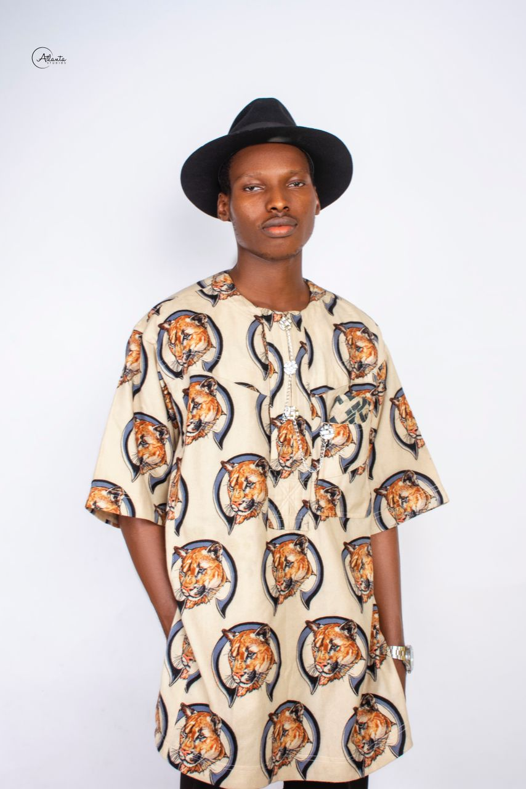

Get to know the person behind the code

I'm a passionate frontend developer based in Port Harcourt, Nigeria, with a strong focus on creating exceptional user experiences through clean, efficient code. My journey in software development began at Rivers State University, where I earned my Bachelor of Science in Computer Science (2018-2023).
I specialize in building modern, responsive web applications that solve real-world problems. Whether it's crafting pixel-perfect user interfaces, integrating complex APIs, or optimizing application performance, I bring meticulous attention to detail and a user-first mindset to every project.
My expertise spans the entire development stack, from creating intuitive frontends with React, Vue, Next.js and Nuxt.js to building robust backend systems with Node.js, Express, and PostgreSQL. I'm particularly passionate about animation and micro-interactions that bring applications to life.
I believe in writing code that is not only functional but also maintainable and scalable. I'm a strong advocate for best practices, including:
When I'm not coding, I'm constantly exploring new technologies and frameworks, contributing to open-source projects, and staying up-to-date with the latest trends in web development. I'm committed to continuous improvement and believe that the best developers are those who never stop learning.
I thrive in collaborative environments where I can work with cross-functional teams to bring innovative ideas to life. Whether it's daily stand-ups, sprint planning sessions, or code reviews, I value clear communication and teamwork.
I'm always interested in hearing about new opportunities and challenging projects. If you're looking for a dedicated developer who combines technical expertise with creative problem-solving, let's connect and discuss how I can contribute to your team's success.
Feel free to reach out via email at peerodemba@gmail.com.